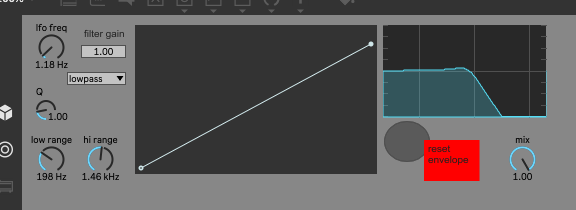

A stupid simple utility I made for my friend emily in a very small ammount of time, maybe 5 or 10 minutes.
It modulates a biquad filter's frequency at audio rate with the LFO shape defined in the envelope editor.
Because biquad filters are silly, they more or less explode when you modulate them fast enough.
Hopefully this is fun to mess around with despite its extreme simplicity.
I finally tested it out myself and realized that there were a number of actually impactful issues (namely the filter type dropdown not working because
i was a foolish individual when making this), so i fixed those and spent 45 seconds cleaning up the user interface. There's also a mix knob now for all you FREAKS out there.
here you go:

download